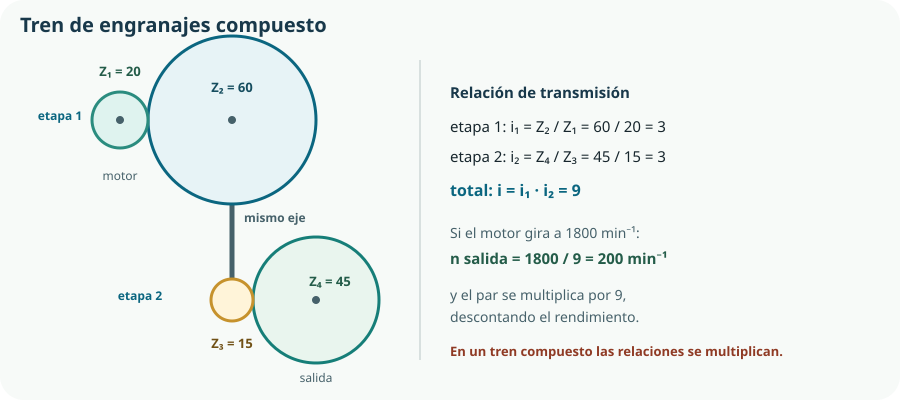

Con el Bloque C empieza el Proyecto 2: el KR-1 deja de ser un objeto y empieza a moverse. Y aparece la primera ley de hierro de la mecánica: una transmisión no crea energía. Lo único que puede hacer es cambiar el reparto entre velocidad y fuerza, y siempre perdiendo algo por el camino. Entender bien ese intercambio es lo que permite elegir un motor pequeño para mover algo pesado, que es el noventa por ciento de lo que hace un ingeniero mecánico.
- identificar en una máquina el motor, la transmisión, el elemento de trabajo y el bastidor;
- distinguir velocidad de giro, velocidad lineal, par, potencia y rendimiento, y relacionarlos;
- calcular la relación de transmisión de un par de engranajes, de poleas o de cadena;
- explicar por qué al reducir la velocidad se multiplica el par, y en qué se paga eso;
- describir los tipos de engranaje y saber cuándo se usa cada uno;
- resolver un tren de engranajes compuesto multiplicando las relaciones de sus etapas;
- comparar engranajes, correas y cadenas por deslizamiento, ruido, mantenimiento y coste;
- explicar qué hace una caja de cambios y por qué existe;
- interpretar y dibujar el esquema de una cadena cinemática.
1. Anatomía de una máquina
Una máquina es un conjunto de elementos que transforma energía para realizar un trabajo. Y por dentro, casi todas responden al mismo esquema de cuatro partes, cualquiera que sea su tamaño: una batidora, un ascensor y el KR-1 se organizan igual.
Motor
Convierte energía —eléctrica, térmica, muscular— en movimiento. En el KR-1, un motor de corriente continua, que estudiaremos en el Tema 10.
Transmisión
Lleva el movimiento hasta donde hace falta y lo adapta: cambia velocidad, par, dirección o naturaleza del movimiento. Es el objeto de este tema y del siguiente.
Elemento de trabajo
Lo que realmente hace la tarea: la cuchilla, la cabina, el obturador de la válvula.
Bastidor
Sostiene todo y absorbe las reacciones. Invisible en los esquemas y decisivo en la realidad: sin un bastidor rígido, la transmisión se desalinea y se destruye.
Transmitir no es lo mismo que transformar
Mecanismos de transmisión
El movimiento conserva su naturaleza y cambia de magnitud o de eje: un giro sigue siendo un giro, más lento o más rápido. Engranajes, poleas, cadenas. Son este tema.
Mecanismos de transformación
El movimiento cambia de naturaleza: un giro se convierte en un desplazamiento rectilíneo, o al revés. Biela-manivela, piñón-cremallera, leva, tornillo-tuerca. Son el Tema 8.
2. Velocidad, par y potencia
Estas tres magnitudes son el vocabulario de todo el bloque. Aquí las presentamos y las relacionamos; el cálculo aplicado, con problemas completos, es el Tema 9.
| Magnitud | Qué es | Símbolo | Unidad |
|---|---|---|---|
| Velocidad de giro | Vueltas que da el eje por unidad de tiempo. | n | min⁻¹ (rpm) |
| Velocidad angular | La misma magnitud en unidades del Sistema Internacional. | ω | rad/s |
| Velocidad lineal | Velocidad de un punto de la periferia, o del cable de una polea. | v | m/s |
| Par o momento | Capacidad de giro: fuerza por la distancia al eje. | M | N·m |
| Potencia | Trabajo por unidad de tiempo; en giro, par por velocidad angular. | P | W |
| Rendimiento | Fracción de la potencia de entrada que sale aprovechable. | η | — (0 a 1, o %) |
ω = 2π n / 60 de vueltas por minuto a radianes por segundo
v = ω · r velocidad lineal en la periferia, r en metros
M = F · d par: fuerza por la distancia perpendicular al eje
P = M · ω potencia en rotación, con M en N·m y ω en rad/s
3. La relación de transmisión
Aquí está la idea central del bloque. La relación de transmisión compara la velocidad de entrada con la de salida de un mecanismo:
i = nentrada / nsalida i > 1 reduce la velocidad; i < 1 la aumenta
Y lo importante es lo que ocurre al par. Si la transmisión fuera perfecta, la potencia de salida sería igual a la de entrada. Como P = M · ω, si la velocidad baja nueve veces, el par tiene que subir nueve veces para que el producto no cambie:
Msalida = Mentrada · i · η el rendimiento η se come una parte de la ganancia
| Tipo | Relación | Efecto | Ejemplo |
|---|---|---|---|
| Reductor | i > 1 | Menos velocidad y más par. | El reductor del KR-1, o el de un ascensor. |
| Multiplicador | i < 1 | Más velocidad y menos par. | El plato grande de una bicicleta en llano; un aerogenerador. |
| Acoplamiento directo | i = 1 | Solo transmite: cambia de eje, no de magnitudes. | Un acoplamiento entre motor y bomba, del Tema 8. |
4. Engranajes
Un engranaje transmite el giro entre dos ejes mediante dientes que encajan. Es la transmisión más precisa que existe: no patina, de modo que la relación entre las velocidades es exacta y se mantiene sin ajustes. Su precio es el ruido, el coste de fabricación y la necesidad de lubricación.
i = Zsalida / Zentrada Z es el número de dientes; también vale con los diámetros
| Tipo | Ejes | Característica | Dónde aparece |
|---|---|---|---|
| Cilíndrico de dientes rectos | Paralelos | El más simple y barato; algo ruidoso. | Reductores sencillos, juguetes, el KR-1. |
| Cilíndrico de dientes helicoidales | Paralelos | Más silencioso y aguanta más carga; genera empuje axial. | Cajas de cambios de automóvil. |
| Cónico | Que se cortan, normalmente a 90° | Cambia la dirección del eje. | Diferencial de un vehículo, taladros de ángulo. |
| Tornillo sin fin y corona | Perpendiculares y cruzados | Relaciones enormes en muy poco espacio; suele ser irreversible. | Limpiaparabrisas, clavijas de guitarra, portones. |
| Piñón-cremallera | Giro a desplazamiento | Ya es transformación, no transmisión. | Tema 8. |
5. Trenes de engranajes
Con un solo par de engranajes no se llega muy lejos: una relación de 9 exigiría una rueda nueve veces mayor que el piñón, imposible de alojar. La solución es encadenar etapas, y el resultado es un tren de engranajes.

Tren simple
Cada eje lleva una sola rueda. Las ruedas intermedias solo cambian el sentido: la relación total es la de la primera con la última, como si las de en medio no existieran.
Tren compuesto
Algún eje lleva dos ruedas solidarias. Cada etapa aporta su relación y las relaciones se multiplican. Es la única forma de conseguir relaciones grandes en poco espacio.
itotal = i1 · i2 · … · in en un tren compuesto, las relaciones se multiplican
6. Poleas y correas
Una transmisión por correa une dos poleas mediante una cinta flexible. Es silenciosa, barata, tolera desalineaciones y permite separar mucho los ejes. Y tiene una propiedad que puede ser virtud o defecto según el caso: patina.
i = Dsalida / Dentrada con los diámetros de las poleas; la correa no cambia su longitud
| Tipo | Sección | Desliza | Uso típico |
|---|---|---|---|
| Plana | Rectangular | Bastante | Máquinas antiguas, transportadores. |
| Trapezoidal | En V, se acuña en la garganta | Poco | Alternador y bomba de un motor; herramientas. |
| Dentada o de distribución | Con dientes que encajan en la polea | Nada | Distribución de un motor, impresoras 3D, ejes de robots. |
7. Cadenas de rodillos
Una cadena de rodillos engrana con los dientes de dos ruedas dentadas. Combina lo mejor de los dos mundos anteriores: transmite sin deslizamiento, como los engranajes, y permite separar mucho los ejes, como las correas. Es la transmisión de la bicicleta y de la motocicleta.
i = Zsalida / Zentrada como en los engranajes: cuenta los dientes, no los diámetros
| Criterio | Engranajes | Correa | Cadena |
|---|---|---|---|
| Deslizamiento | Ninguno | Sí, salvo la dentada | Ninguno |
| Distancia entre ejes | Muy corta | Grande | Grande |
| Rendimiento | Alto (≈0,95 por etapa) | Medio-alto | Alto |
| Ruido | Medio-alto | Bajo | Alto |
| Mantenimiento | Lubricación | Tensado y sustitución | Lubricación, tensado y limpieza |
| Carga admisible | Muy alta | Media | Alta |
| Protección ante bloqueo | No: rompe algo | Sí: patina | No: rompe algo |
| Coste | Alto | Bajo | Medio |
8. La caja de cambios
Una caja de cambios es un conjunto de varias relaciones de transmisión entre las que se puede escoger. Existe por una razón muy concreta: un motor solo rinde bien en un intervalo estrecho de velocidades, y la máquina tiene que trabajar en condiciones muy distintas.
Un motor de combustión da su par máximo en torno a un régimen determinado. Por debajo se ahoga; por encima, se desboca sin ganar fuerza. La rueda, en cambio, tiene que girar despacio al arrancar y rápido en autopista.
Varios pares de engranajes con relaciones distintas y un mecanismo para seleccionar cuál está activo, de modo que el motor trabaje siempre cerca de su régimen bueno.
Relación alta: mucho par en la rueda y poca velocidad. Para arrancar y para subir cuestas.
Relación baja: mucha velocidad y poco par. Para ir rápido en llano con el motor tranquilo.
Se intercala una rueda loca que invierte el sentido sin alterar apenas la relación.
9. Elegir la transmisión
Con lo anterior, elegir deja de ser cuestión de gusto. Las preguntas, en orden:
- ¿Qué relación necesito? Se obtiene del par que exige la carga y del par que da el motor, como en el ejercicio de la sección 3.
- ¿Qué distancia hay entre los ejes? Ejes juntos: engranajes. Ejes separados: correa o cadena.
- ¿Importa la posición exacta? Si hay que saber dónde está el mecanismo en cada momento, nada que patine: engranajes, cadena o correa dentada.
- ¿Qué carga transmito? Cargas altas piden engranajes o cadena; una correa plana se rinde.
- ¿Hay que protegerse de un bloqueo? Si sí, una correa que patine puede ser mejor que un engranaje que rompa.
- ¿Quién va a mantenerlo? En el huerto de un instituto, en agosto, no habrá nadie tensando una correa.
10. La cadena cinemática y su esquema
La cadena cinemática es la sucesión de elementos por los que pasa el movimiento desde el motor hasta el elemento de trabajo. Representarla es aplicar lo aprendido en el Tema 3: un esquema que renuncia a la forma real y conserva la función y la conexión.
| Elemento | Velocidad | Par | Qué hace |
|---|---|---|---|
| Motor de CC | 1800 min⁻¹ | 0,35 N·m | Convierte electricidad en giro. |
| Etapa 1: Z₁ 20 → Z₂ 60 | 600 min⁻¹ | ≈1,00 N·m | Reduce 3 veces. |
| Etapa 2: Z₃ 15 → Z₄ 45 | 200 min⁻¹ | ≈2,68 N·m | Reduce otras 3 veces. |
| Obturador de la válvula | 200 min⁻¹ | 2,68 N·m | Abre y cierra el paso del agua. |
Comprueba lo que has aprendido
Este tema se demuestra con una cadena cinemática razonada y con números que cuadran.
| Aspecto | Qué debes demostrar | Evidencias posibles |
|---|---|---|
| Magnitudes | Que distingues velocidad, par, potencia y rendimiento y sabes pasar de unas unidades a otras. | Conversión de min⁻¹ a rad/s, cálculo de la potencia de un eje y su comprobación por dos caminos. |
| Relación de transmisión | Que la calculas en engranajes, poleas y cadena, y que sabes qué le ocurre al par. | Relación de un tren compuesto obtenida multiplicando etapas, con el rendimiento aplicado. |
| Elegir el mecanismo | Que eliges por criterios y no por costumbre, y que justificas los descartes. | Comparación de engranaje, correa y cadena para tu caso, con la tabla de criterios cumplimentada. |
| Representar | Que dibujas la cadena cinemática con simbología y la rotulas. | Esquema cinemático con dientes anotados, referencias que remiten a la lista de materiales y tabla de magnitudes por eslabón. |
Comprobación práctica: monta el tren con las piezas del taller, marca una referencia en el eje de entrada y en el de salida, da nueve vueltas a la entrada y comprueba que la salida da exactamente una. Si no cuadra, o el montaje tiene juego o el tren no es el que creías.
Glosario del tema
- Bastidor
- Estructura que sostiene los elementos de una máquina y absorbe sus reacciones.
- Cadena cinemática
- Sucesión de elementos por los que pasa el movimiento desde el motor hasta el elemento de trabajo.
- Caja de cambios
- Conjunto de relaciones de transmisión seleccionables, que permite al motor trabajar cerca de su régimen óptimo.
- Correa dentada
- Correa con dientes que engranan en la polea, de modo que no desliza y conserva la posición.
- Engranaje
- Mecanismo que transmite el giro entre ejes mediante ruedas con dientes que encajan.
- Máquina
- Conjunto de mecanismos con una fuente de energía que produce un trabajo útil.
- Mecanismo
- Conjunto de piezas que transmite o transforma un movimiento.
- Módulo
- Magnitud normalizada que fija el tamaño del diente de un engranaje; dos engranajes solo encajan si comparten módulo.
- Motorreductor
- Conjunto cerrado de motor y reductor, montado y lubricado de fábrica.
- Multiplicador
- Transmisión con relación menor que uno: aumenta la velocidad y reduce el par.
- Par o momento
- Producto de una fuerza por su distancia perpendicular al eje; mide la capacidad de hacer girar.
- Potencia
- Trabajo por unidad de tiempo; en un eje que gira, producto del par por la velocidad angular.
- Reductor
- Transmisión con relación mayor que uno: reduce la velocidad y multiplica el par.
- Relación de transmisión
- Cociente entre la velocidad de entrada y la de salida de un mecanismo.
- Rendimiento
- Fracción de la potencia de entrada que se recupera a la salida; el resto se pierde en rozamiento y calor.
- Rueda loca
- Rueda dentada intercalada que invierte el sentido de giro sin alterar la relación de transmisión.
- Tornillo sin fin
- Mecanismo de tornillo y corona que da relaciones muy grandes en poco espacio y suele ser irreversible.
- Tren compuesto
- Tren de engranajes con dos ruedas solidarias en algún eje, de modo que las relaciones de sus etapas se multiplican.
- Tren simple
- Tren en el que cada eje lleva una sola rueda y las intermedias solo cambian el sentido.
- Velocidad angular
- Ángulo girado por unidad de tiempo, en radianes por segundo.
Resumen esencial
- Casi toda máquina se organiza en motor, transmisión, elemento de trabajo y bastidor.
- Transmitir conserva la naturaleza del movimiento; transformar la cambia, y eso es el Tema 8.
- El par es fuerza por distancia al eje; la potencia es par por velocidad angular. No son lo mismo y se confunden constantemente.
- La relación de transmisión es el cociente de velocidades; si reduce la velocidad, multiplica el par en la misma proporción.
- Una transmisión no crea potencia: solo reparte de otro modo lo que recibe, y además pierde una parte en calor.
- En engranajes y cadena la relación se calcula con los dientes; en poleas, con los diámetros.
- Dos engranajes solo encajan si comparten módulo, que es una magnitud normalizada.
- Dos ruedas que engranan giran en sentidos contrarios; una rueda loca invierte el sentido sin cambiar la relación.
- En un tren compuesto las relaciones se multiplican, y los rendimientos también: cuatro etapas del 95 % dan un 81 %.
- Una correa que patina es un fusible mecánico, pero pierde la posición; la dentada no patina y por eso mueve una impresora 3D.
- La cadena de rodillos combina la precisión del engranaje con la distancia entre ejes de la correa, a cambio de ruido y mantenimiento.
- Una caja de cambios existe porque el motor rinde bien en un intervalo estrecho; un motor eléctrico, que no tiene ese problema, apenas la necesita.
- La transmisión se elige con seis preguntas: relación, distancia entre ejes, necesidad de posición exacta, carga, protección ante bloqueo y mantenimiento.
Fuentes y recursos fiables
- [1] UNE — Asociación Española de Normalización. Normalización de engranajes cilíndricos y de su módulo (serie UNE-EN ISO 53 y 54).
- [2] GeoGebra. Construcciones dinámicas para simular relaciones de transmisión y cadenas cinemáticas.
- [3] Algodoo. Simulador de mecánica en dos dimensiones para montar y probar mecanismos.
- [4] Centro Español de Metrología. Unidades del Sistema Internacional de par, potencia y velocidad angular.
- [5] Decreto 64/2022, de 20 de julio (BOCM). Currículo de Tecnología e Ingeniería I, bloque C y criterio 4.1.